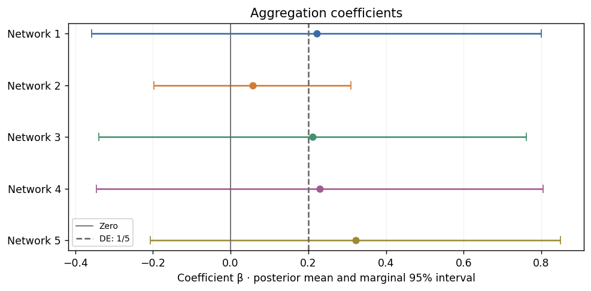
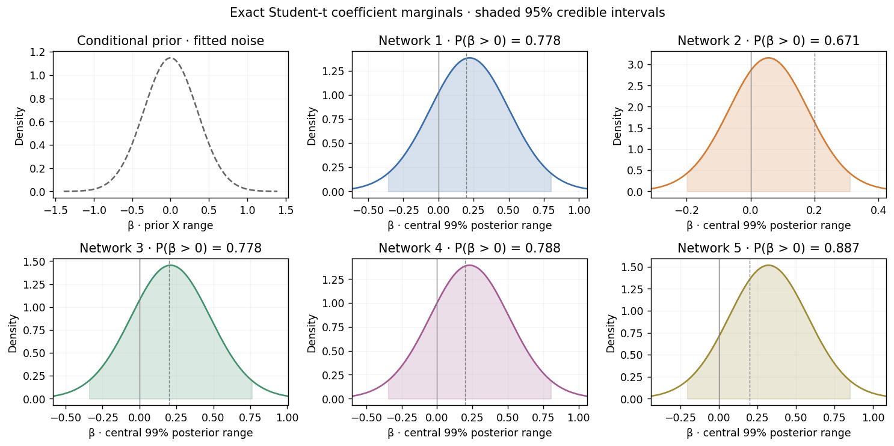
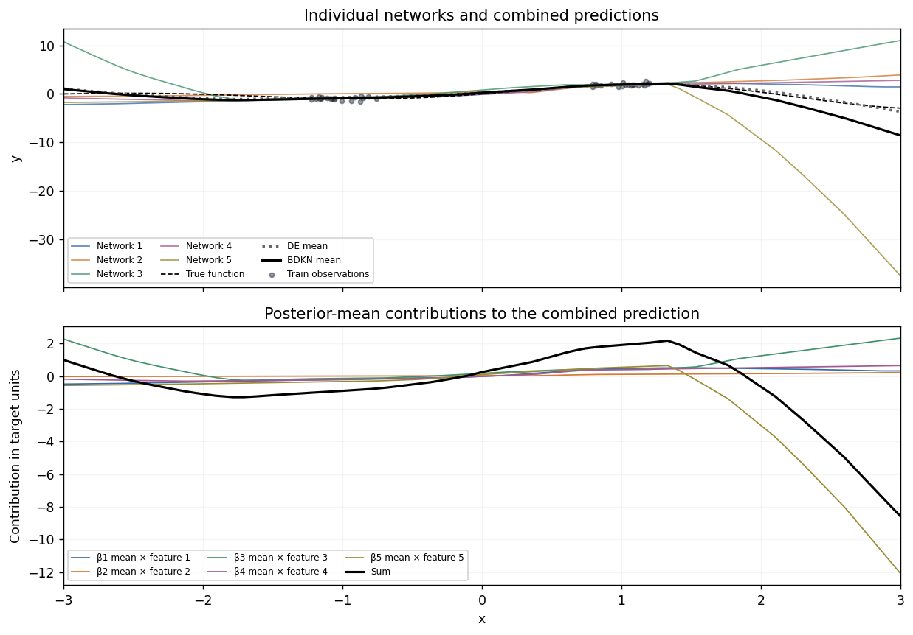
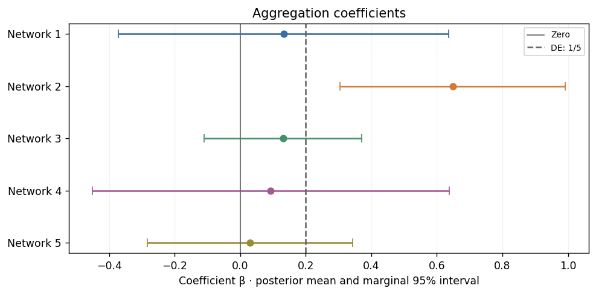
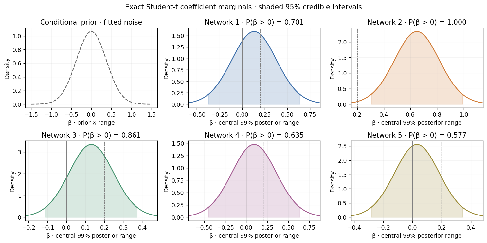
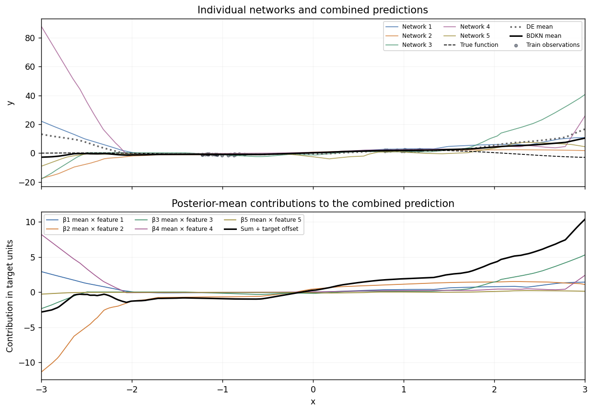
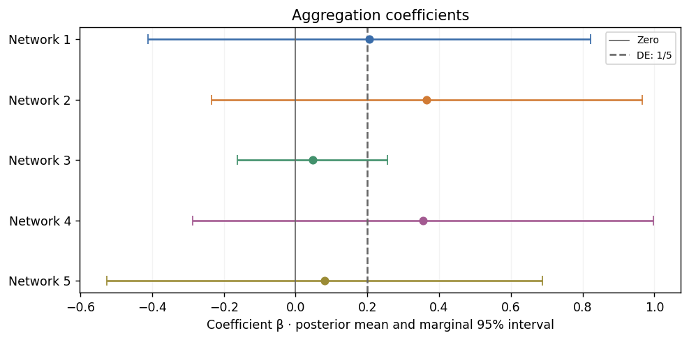
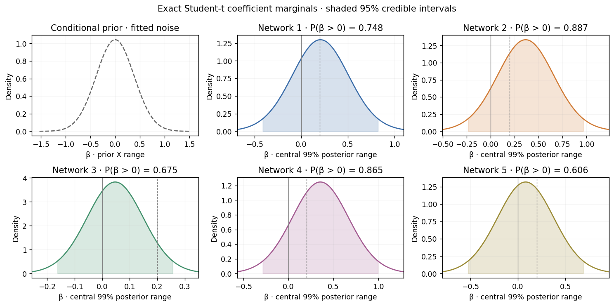
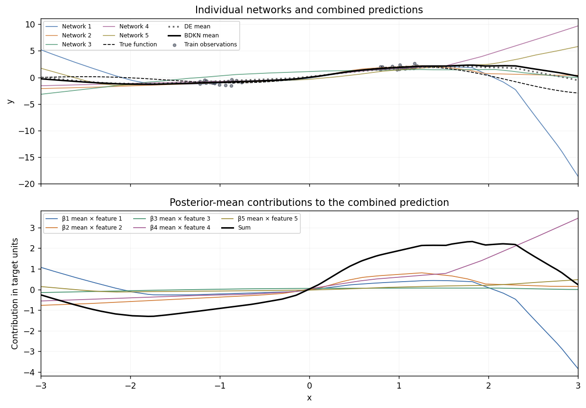

Regression comparison
Download resultsAggregation weights
Coefficients can be negative and need not sum to one. Intervals describe coefficient uncertainty; the dashed reference is DE’s fixed 1/H weight.
BDKN


Each density panel uses its own X range for readability; coefficient intervals above share a common axis. Prior reference conditions on fitted noise. Contribution shares use held-out inputs; test targets are used only for scoring.
| Network | β mean | 95% low | 95% high | P(β > 0) | Contribution share | Test RMSE | Test NLL |
|---|---|---|---|---|---|---|---|
| 1 | 0.15914 | -0.34378 | 0.66206 | 0.73694 | 0.10339 | 1.22604 | 3.28984 |
| 2 | 0.26043 | -0.36725 | 0.88811 | 0.79665 | 0.27520 | 1.50533 | 12.03988 |
| 3 | 0.22915 | -0.27019 | 0.72850 | 0.82038 | 0.21502 | 1.32037 | 9.46759 |
| 4 | 0.05241 | -0.67124 | 0.77606 | 0.55782 | 0.00895 | 1.10368 | 1.55372 |
| 5 | 0.35756 | -0.02672 | 0.74184 | 0.96634 | 0.39743 | 1.54360 | 13.74209 |
Functional repulsion · BDKN



Each density panel uses its own X range for readability; coefficient intervals above share a common axis. Prior reference conditions on fitted noise. Contribution shares use held-out inputs; test targets are used only for scoring.
| Network | β mean | 95% low | 95% high | P(β > 0) | Contribution share | Test RMSE | Test NLL |
|---|---|---|---|---|---|---|---|
| 1 | 0.22142 | -0.35716 | 0.80000 | 0.77810 | 0.10529 | 1.68289 | 8.03008 |
| 2 | 0.05618 | -0.19792 | 0.31028 | 0.67131 | 0.02285 | 2.16119 | 13.20693 |
| 3 | 0.21052 | -0.34004 | 0.76109 | 0.77791 | 0.22481 | 4.95582 | 2.63912 |
| 4 | 0.22962 | -0.34496 | 0.80420 | 0.78797 | 0.10447 | 1.86811 | 76.14671 |
| 5 | 0.32170 | -0.20629 | 0.84969 | 0.88732 | 0.54258 | 9.43901 | 48.16049 |
Weight repulsion · BDKN



Each density panel uses its own X range for readability; coefficient intervals above share a common axis. Prior reference conditions on fitted noise. Contribution shares use held-out inputs; test targets are used only for scoring.
| Network | β mean | 95% low | 95% high | P(β > 0) | Contribution share | Test RMSE | Test NLL |
|---|---|---|---|---|---|---|---|
| 1 | 0.13238 | -0.37195 | 0.63672 | 0.70066 | 0.14465 | 6.36266 | 2.56345 |
| 2 | 0.64834 | 0.30461 | 0.99207 | 0.99977 | 0.43883 | 4.13318 | 13.06382 |
| 3 | 0.13057 | -0.10945 | 0.37059 | 0.86093 | 0.20510 | 11.65540 | 2.93360 |
| 4 | 0.09343 | -0.45016 | 0.63701 | 0.63493 | 0.19375 | 18.70514 | 3.88820 |
| 5 | 0.03015 | -0.28336 | 0.34366 | 0.57656 | 0.01768 | 3.88422 | 2.70545 |
First-order repulsion · BDKN



Each density panel uses its own X range for readability; coefficient intervals above share a common axis. Prior reference conditions on fitted noise. Contribution shares use held-out inputs; test targets are used only for scoring.
| Network | β mean | 95% low | 95% high | P(β > 0) | Contribution share | Test RMSE | Test NLL |
|---|---|---|---|---|---|---|---|
| 1 | 0.20590 | -0.41130 | 0.82309 | 0.74798 | 0.25341 | 3.28863 | 2617.98867 |
| 2 | 0.36528 | -0.23518 | 0.96574 | 0.88696 | 0.22636 | 1.25789 | 27.82123 |
| 3 | 0.04718 | -0.16200 | 0.25636 | 0.67451 | 0.02814 | 1.53041 | 2070.88962 |
| 4 | 0.35566 | -0.28647 | 0.99779 | 0.86518 | 0.42351 | 3.79288 | 14.11855 |
| 5 | 0.08129 | -0.52537 | 0.68795 | 0.60604 | 0.06858 | 2.55552 | 1311.31624 |